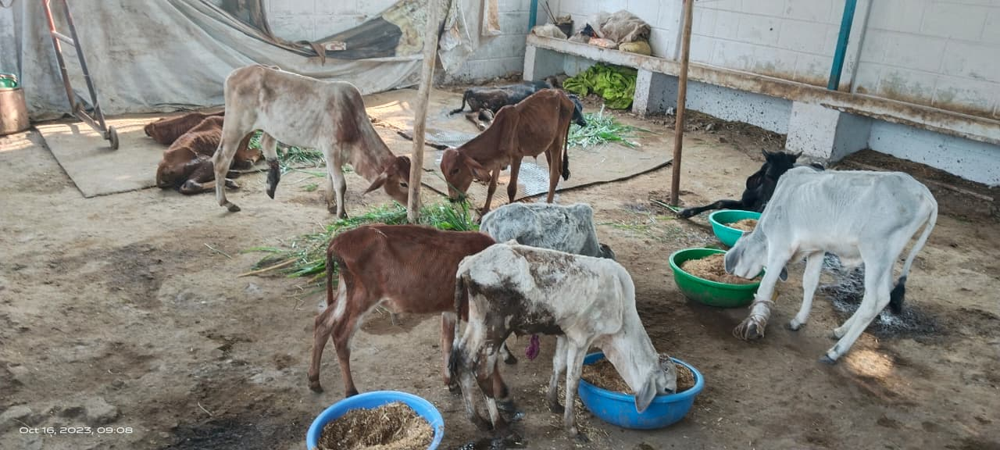
भोजन और पोषण
हम पौष्टिक और शुद्ध भोजन-चारे की व्यवस्था सुनिश्चित करते हैं।
और जानें →गौ सेवा समिति वर्षों से निराश्रित, घायल एवं असहाय गौ माताओं की सेवा, चिकित्सा, भोजन और संरक्षण के लिए निरंतर समर्पित है।
हमारा उद्देश्य गौ माता की सेवा, संरक्षण और उनके स्वास्थ्य की देखभाल करना है। हम नीमच में बेसहारा, बीमार, घायल और विकलांग गौवंश की सेवा-उपचार के लिए दिन-रात कार्यरत हैं, जहाँ हर गौ माता को सम्मान और देखभाल मिलती है।
और जानें →गौ माता की सेवा और संरक्षण के लिए हमारी टीम दिन-रात समर्पित होकर रेस्क्यू, चिकित्सा, भोजन, आश्रय और जनजागरूकता जैसे अनेक सेवा कार्य संचालित करती है।

हम पौष्टिक और शुद्ध भोजन-चारे की व्यवस्था सुनिश्चित करते हैं।
और जानें →
हम गौ माता की दैनिक देखभाल और स्वास्थ्य का विशेष ध्यान रखते हैं।
और जानें →
बीमार, घायल और विकलांग गोवंश के लिए निरंतर उपचार व स्वास्थ्य जांच।
और जानें →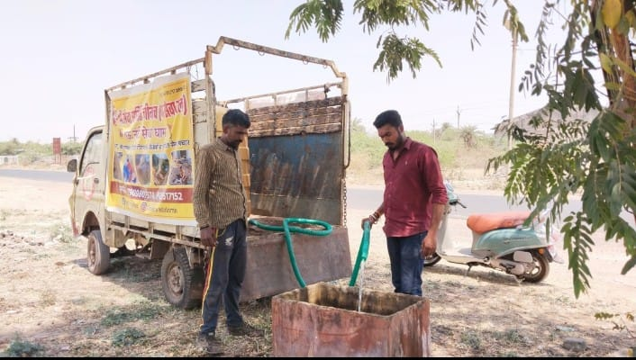
भीषण गर्मी में गौवंश व बेज़ुबान जीवों के लिए रोज़ 2000 लीटर क्षमता का जल सेवा वाहन शहरभर में पेयजल पहुँचाता है।
और जानें →
हम बेसहारा, दुर्घटनाग्रस्त और पीड़ित गौ माता का रेस्क्यू व संरक्षण करते हैं।
और जानें →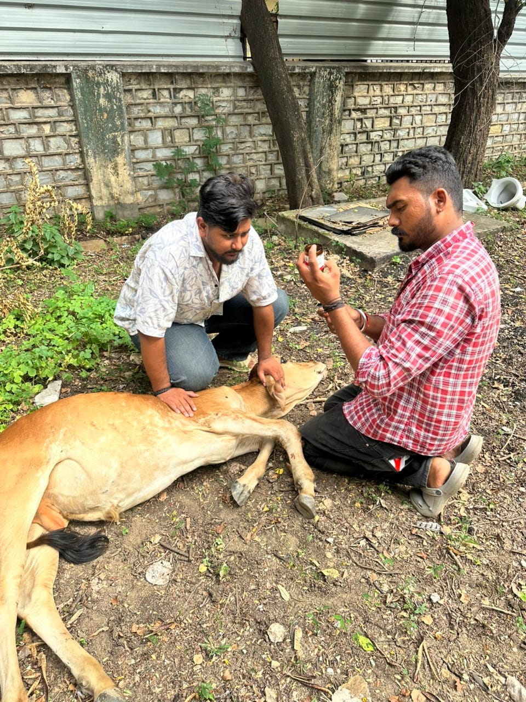
दुर्घटनाग्रस्त, बीमार एवं बेसहारा गौवंश का त्वरित रेस्क्यू कर सुरक्षित स्थान पर उपचार किया जाता है।
और जानें →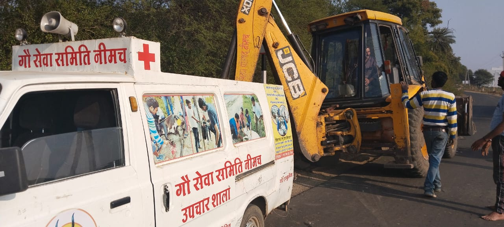
घायल एवं गंभीर अवस्था में गौ माता को शीघ्र अस्पताल एवं गौशाला तक पहुँचाने की सुविधा।
और जानें →
गौवंश को पौष्टिक हरा चारा एवं संतुलित आहार उपलब्ध कराया जाता है।
और जानें →गर्मी के मौसम में शहरभर के गौवंश एवं अन्य बेज़ुबान पशुओं तक स्वच्छ पेयजल पहुँचाया जाता है।
और जानें →
बेसहारा एवं वृद्ध गौवंश के लिए सुरक्षित आश्रय, भोजन और नियमित देखभाल की व्यवस्था।
और जानें →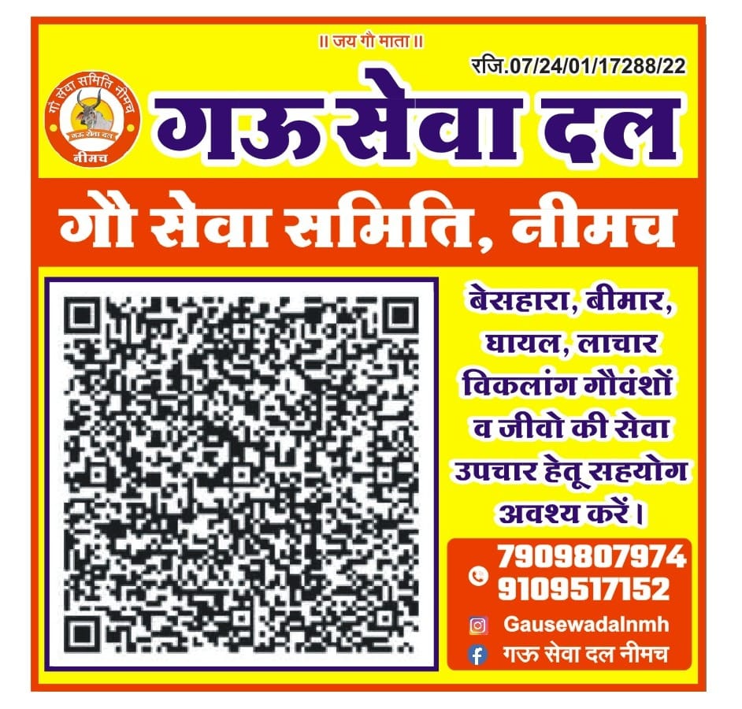
गौ संरक्षण एवं पशु सेवा के प्रति समाज में जागरूकता फैलाने हेतु अभियान एवं कार्यक्रम आयोजित किए जाते हैं।
और जानें →
घायल एवं बीमार गोवंश को समय पर दवाइयाँ, उपचार और आवश्यक चिकित्सा उपलब्ध कराई जाती है।
और जानें →
घायल या संकटग्रस्त गौवंश की सूचना मिलते ही हमारी टीम तुरंत सहायता के लिए पहुँचती है।
और जानें →
गौ सेवा के लिए अन्न, चारा, दवाइयाँ एवं आर्थिक सहयोग स्वीकार कर सेवा कार्यों को आगे बढ़ाया जाता है।
और जानें →
11 मई 2026 को दैनिक भास्कर, नीमच संस्करण में गौ सेवा समिति के
"जल सेवा वाहन" अभियान को प्रमुखता से प्रकाशित किया गया। इस विशेष पहल के अंतर्गत
भीषण गर्मी के दौरान बेसहारा गौवंश एवं अन्य बेज़ुबान जीवों के लिए शहर के विभिन्न क्षेत्रों में
प्रतिदिन स्वच्छ पेयजल उपलब्ध कराया जाता है।
पिछले 8 वर्षों से हमारी समर्पित टीम लगभग
2000 लीटर क्षमता वाले जल सेवा वाहन के माध्यम से
25 से अधिक स्थानों पर निरंतर जल सेवा प्रदान कर रही है।
यह अभियान केवल गौ सेवा ही नहीं, बल्कि मानवता, करुणा और जीव-दया के प्रति हमारी अटूट प्रतिबद्धता का भी प्रतीक है।

गौ सेवा समिति द्वारा किए जा रहे सेवा, संरक्षण एवं जनकल्याण कार्यों को विभिन्न समाचार पत्रों और मीडिया संस्थानों ने समय-समय पर प्रमुखता से प्रकाशित किया है। यह हमारे प्रति समाज के विश्वास और सेवा के निरंतर प्रयासों का प्रमाण है।
हमारी गौ सेवा समिति द्वारा किए गए सेवा कार्यों, रेस्क्यू अभियान, चिकित्सा सेवा एवं गौ माता की देखभाल की वास्तविक तस्वीरें।

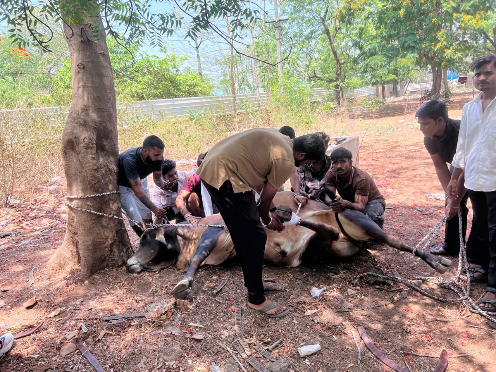


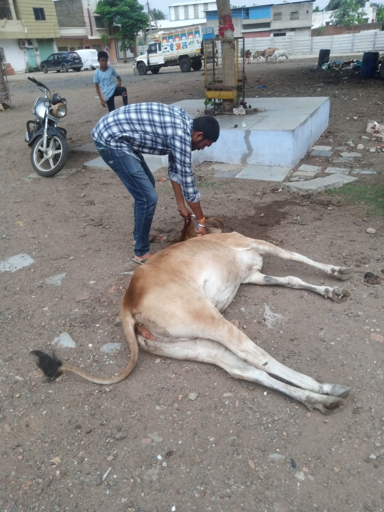
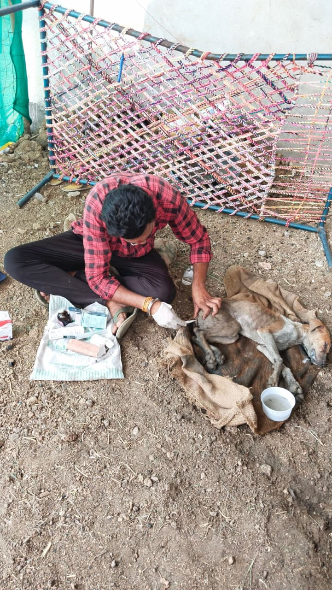
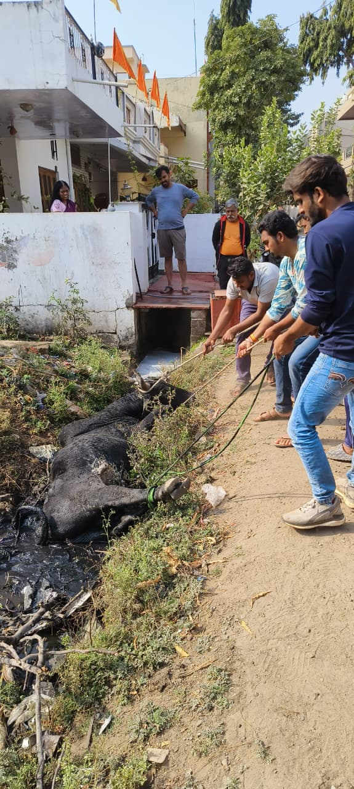

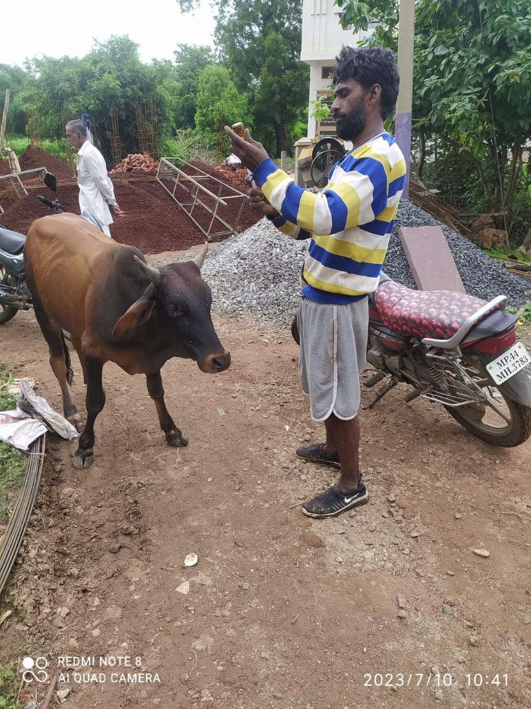

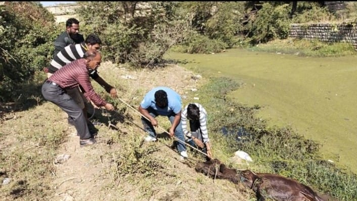


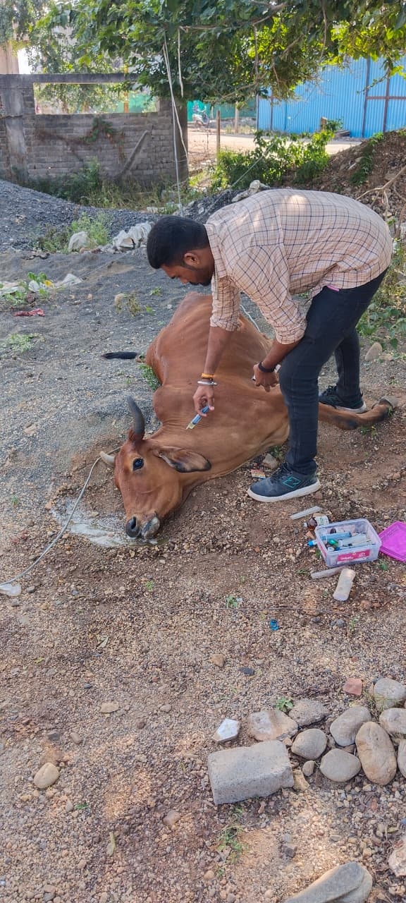
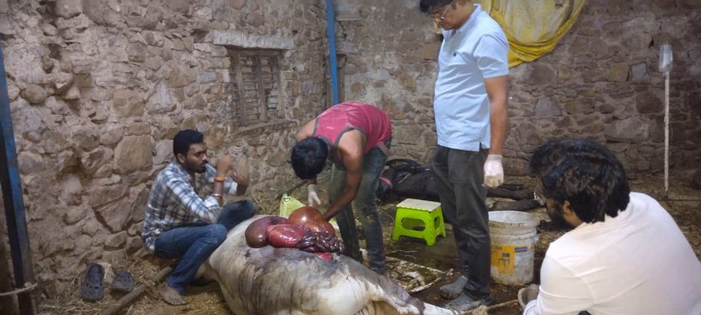
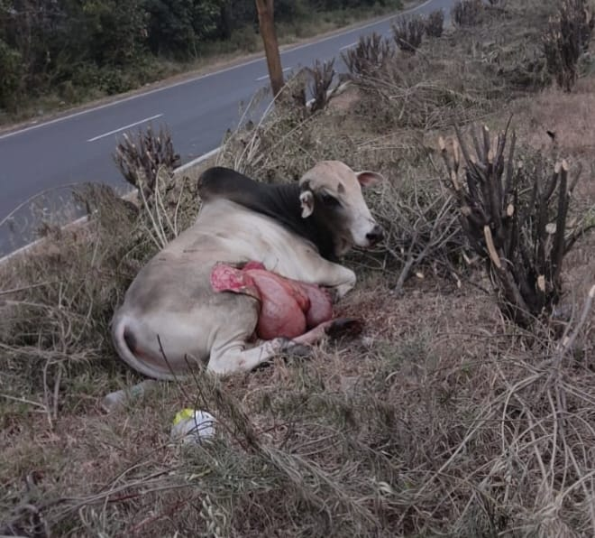
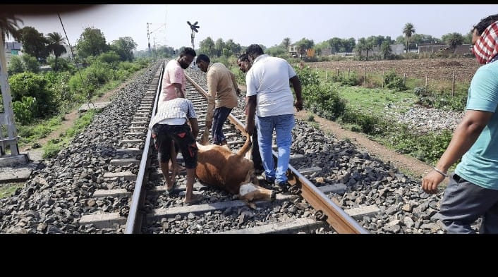
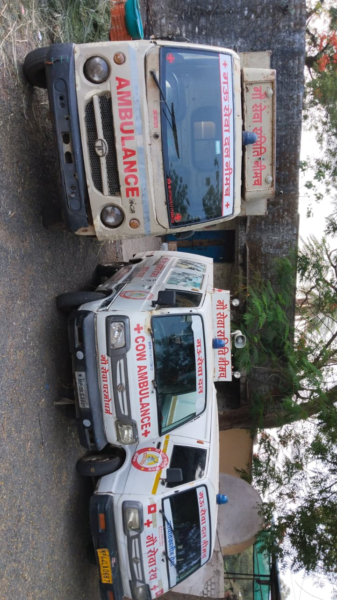
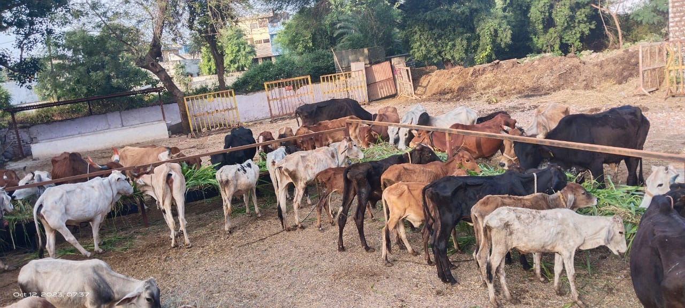


गौ माता की सेवा केवल दान नहीं, बल्कि करुणा, संस्कृति और मानवता के प्रति हमारा दायित्व है। आपका प्रत्येक सहयोग गौ माता के भोजन, चिकित्सा, रेस्क्यू, आश्रय एवं संरक्षण जैसे सेवा कार्यों को निरंतर संचालित रखने में महत्वपूर्ण भूमिका निभाता है।
आपका छोटा सा योगदान, गौ माता के लिए बड़ा सहारा
बैंक ट्रांसफर विवरण
प्रश्न, सुझाव या सहयोग — हम 24 घंटे में जवाब देंगे
📍Gau Sewa Dham, Scheme No.9, Near Panchwati Colony, Neemuch, Madhya Pradesh 458441
📞+91 79098 07974
+91 91095 17152
✉gausewadalnmh@gmail.com